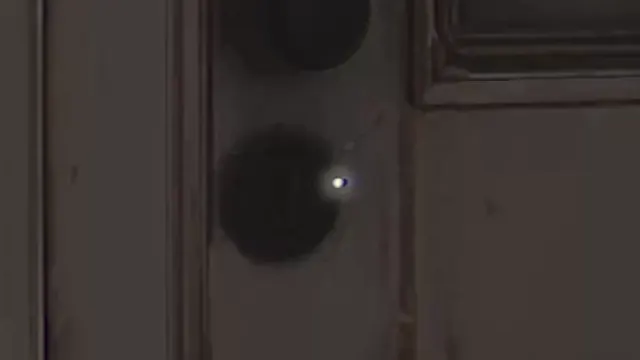
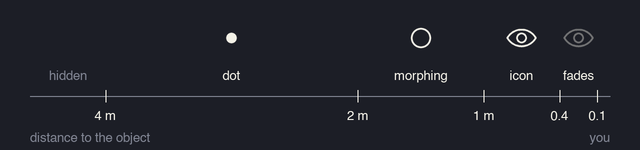
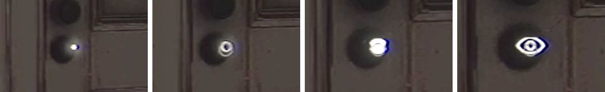
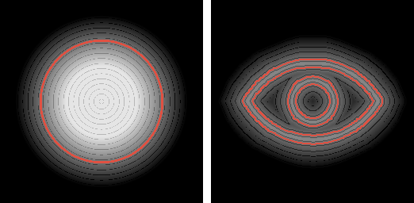

The goal
I needed a way to show what you can interact with without covering the screen in UI. The idea was that hints stay small and quiet from far away, only show what they are as you walk up, and feel like they're actually in the room.
How it works
Each icon's shape is drawn by a signed distance field shader, so it stays crisp at the sizes it's shown at. The shapes come from my icon atlas: an editor tool bakes plain white silhouettes into distance fields, one 256-pixel cell per icon. The icons are placed in the world next to their object instead of being drawn on top of the screen.
1. Dot to glyph
From 4 metres away you see a little dot. At 2 metres it starts to change: it grows into a ring, the ring thickens and fills in, and by 1 metre it has opened up into the icon for that action, like this eye on a door you can peek through. From 40 cm it fades, and by 10 cm it's gone, so it doesn't sit over the thing you're reaching for.



The shader blends the circle's distance value with the icon's. Since they're both distance fields, every step in between is a clean shape instead of two images fading over each other.
For the hollow ring, the field is folded around its edge (the abs of the distance), which is the standard way to turn a solid shape into an outline. The fold is only on for the middle of the morph, so the finished icon is drawn as it was authored. Edges are smoothed using how fast the field changes from one pixel to the next (fwidth).
In the game the shape is drawn into a small texture of its own, 192 pixels across, and only redrawn when the morph changes. That texture is shown through a second material that adds a sketchy wobble. The glow is a separate soft halo behind the shape, on a dark backing so it still reads against bright surfaces.
2. Living in the world
Each icon is a small card facing the camera, sitting on its object and pulled 35 cm towards you so the object doesn't hide it. Since they're in the world, walls and whatever you're holding cover them naturally, so they don't pop in and out around corners.
The card isn't a fixed size in the world. It's sized in screen pixels and grows as you get closer, with a minimum so the far dot never shrinks to nothing.
Which stage an icon is in only depends on how far away you are, the same walking in as walking out. There's no line-of-sight check that could flicker, because the depth test already hides icons behind walls. The icons are also on a layer the Game Boy camera doesn't render, so they never end up in your photos.